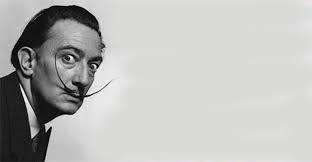

Slavni slikar uporno je odbijao isplaćivati honorare svojim brojnim tajnicama. Umjesto toga davao im je svoje slike kao akvizicije, čime nisu mogle odmah platiti stanarinu, ali kasnije su im se sedmerostruko isplatile.
Dalí je tijekom cijelog života bio inspiriran opskurnim znanstvenim teorijama, a 1958. zainteresirao se za rad fizičara Wernera Heisenberga. Danas već legendarni antijunak Walter White, kojeg je glumio Bryan Cranston, preuzeo je nadimak Heisenberg i to je postao njegov alter ego u svijetu kriminala i kuhanja metamfetamina. Dali je u jednom katalogu napisao: 'Ja, koji sam se prethodno divio samo Daliju, odsad počinjem cijeniti Heisenberga koji mi nalikuje.'
Umjetnik u usponu odbio je ispitivanje iz povijesti umjetnosti na završnom ispitu, tvrdeći 'da niti jedan od profesora iz škole nema dovoljno kompetentnosti za procjenu njegova genija'. Njegov razlog za odlazak nije bio ideološki, već praktične prirode: želio je da ga otac nastavi financijski podupirati, a to bi prestalo čim završi školu. Umjesto toga, imao je razlog otputovati u Pariz i studirati o očevom trošku.
Godine 1955. dobio je narudžbu da napravi portret slavnog engleskog glumca Laurencea Oliviera za plakat filma 'Richard III', u kojem je imao glavnu ulogu. Unatoč početnim skicama napravljenim u filmskim studijima Shepperton, Dali je odbio slikati u Engleskoj te je nazvao tu zemlju 'najneugodnijim mjestom na svijetu'. Vratio se u Španjolsku da dovrši sliku, ali ona je zadržana na aerodromu u Barceloni jer je procijenjena kao previše vrijedna za transport. Redatelj filma Alexander Korda pobjesnio je, ali Olivieru se posrećilo i dobio je svoj portret kao neočekivani poklon.

Tijekom londonske međunarodne izložbe nadrealizma 1936, u to doba na vrhuncu karijere, održao je predavanje odjeven u staromodno ronilačko odijelo. Time je nastojao pokazati kako egzistira na dnu mora podsvjesnog. Obožavatelji nisu odmah uočili da se njihov omiljeni umjetnik davi unutar staklene kugle, već su mislili da je pretjerana gestikulacija dio njegovog performansa sve dok se nije gotovo onesvijestio, a pjesnik David Gascoyne priskočio mu u pomoć, otvorivši kacigu matičnim ključem.
Napunio je svoj bijeli Rolls Royce Phantom II s 500 kg cvjetače i vozio ga od Španjolske do Pariza 1955. Kasnije je taj čin objasnio pred publikom: 'Sve završi u cvjetači!' Tri godine kasnije kazao je američkom novinaru Mikeu Wallacu da ga je cvjetača privukla zbog 'logaritamskih oblina'.
U šezdesetim godinama nabavio je obojanog leoparda kojeg je nazvao Babou te ga je vodio na uzici svugdje gdje se pojavljivao, čak i u restoran na Manhattanu. Kad se jedan od gostiju uplašio, Dali ga je primirio objašnjenjem da je Babou zapravo 'normalna mačka obojana u op art stilu'.
Obožavanu Galu upoznao 1929, dok je još bila u braku s njegovim prijateljem, francuskim pjesnikom Paulom Eluardom. On se kasnije diplomatski pojavio kao uzvanik na njihovom vjenčanju. Dalijev odabir uvrijedio je njegovu obitelj, a nisu odobravali to što je Gala već bila majka i starija od njega deset godina. Otac ga je razbaštinio zbog vjenčanja.
Unatoč čestim izvanbračnim aferama s obje strane, Dali i Gala ostali su zajedno do njene smrti. Godine 1969. Dali je za nju kupio dvorac u Pubolu, 80 km udaljen od njegovog doma u Port Lligatu. Navodno ju je smio posjećivati samo uz pismeni poziv s njene strane. Gala je nastavljala ugošćivati i praviti zabave za svoje ljubavnike sve do starosti.
Prilikom posjeta New Yorku, 1934, nosio je na sebi odijelo za spašavanje, a dok je putovao vlakom, užetom je bio privezan za sve svoje slike. Dočekali su ga paparazzi na koje je bacio dvometarsku štrucu kruha.
Pojavio se u showu 'What's My Line', u kojem su natjecatelji trebali pogoditi profesiju i ime gosta pitajući samo pitanja na koja bi uzvanici odgovarali s 'da' ili 'ne'. Dali je na snimanju stvorio pravi kaos, tvrdeći da je bio pisac, TV ličnost, sportaš i ilustrator stripova. Jedan od sudionika bio je na rubu iritiranosti i očaja te je prije odustajanja uzviknuo da 'ne postoji ništa što taj čovjek ne zna raditi!'.

Dalijevim djelima
https://www.wikiart.org/en/salvador-dali/all-works
Njegovom životu
http://thedali.org/timeline/
Dalijevi citati
https://www.goodreads.com/author/quotes/165858.Salvador_Dal_

Zanimljivo je da je, osim slonova i satova, jaje jedan od čestih Dalijevih motiva. On jaje povezuje s nečim očinskim i interauternim, a koristi ga kako bi simbolizovao nadu i ljubav.
Dali o slikarstvu govori kao o magiji. Suprotno od većine umjetnika XX vijeka ima potrebu da se opravdava pred savremenicima. Njegov stav prema savremenim slikarima je taj što im zamjera da su zaboravili tehniku starih majstora
Rođen je 11. maja 1904. godine, a umro 23. januara 1989.